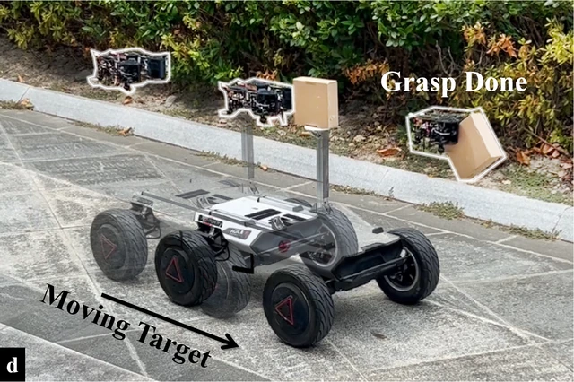
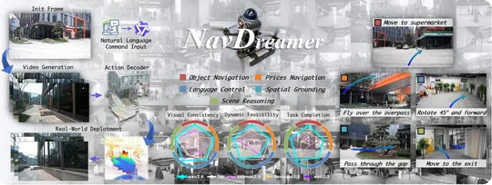
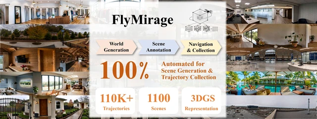
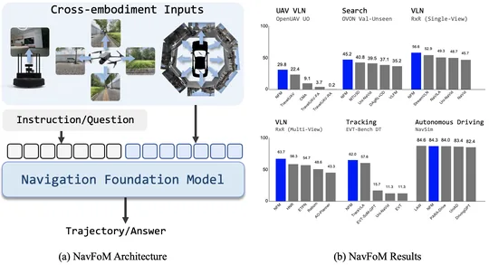

Hand-like autonomous flying robot for airborne grasping and interaction
Nature Communications · 2026
Foundation Model Lead · Differential Robotics 微分智飞
I received my Ph.D. in Control Science and Engineering from Zhejiang University (ZJU) in 2026, advised by Prof. Fei Gao at FAST Lab. Previously, I earned my B.Eng. in Automation from ZJU in 2021. During my studies, I received the Zhejiang University First-Class Scholarship and was named an Outstanding Graduate of Zhejiang Province. As a core team member, I also helped lead a Young Scientist Project under China’s National Key R&D Program.
I am currently the Foundation Model Lead at Differential Robotics and a postdoctoral researcher in a joint program between Differential Robotics and Zhejiang University. I lead research on embodied intelligence and large-scale AI models, focusing on robot foundation models, world models, embodied robot swarms, reinforcement learning, and planning & control for real-world robots. I also mentor students and welcome research discussions and collaborations.
Nature Communications · 2026

IEEE Transactions on Robotics · 2026 · Accepted


IEEE/ASME Transactions on Mechatronics · 2026 · Accepted

IEEE Robotics and Automation Letters · 2026 · Accepted


IEEE Robotics and Automation Letters · 2023



